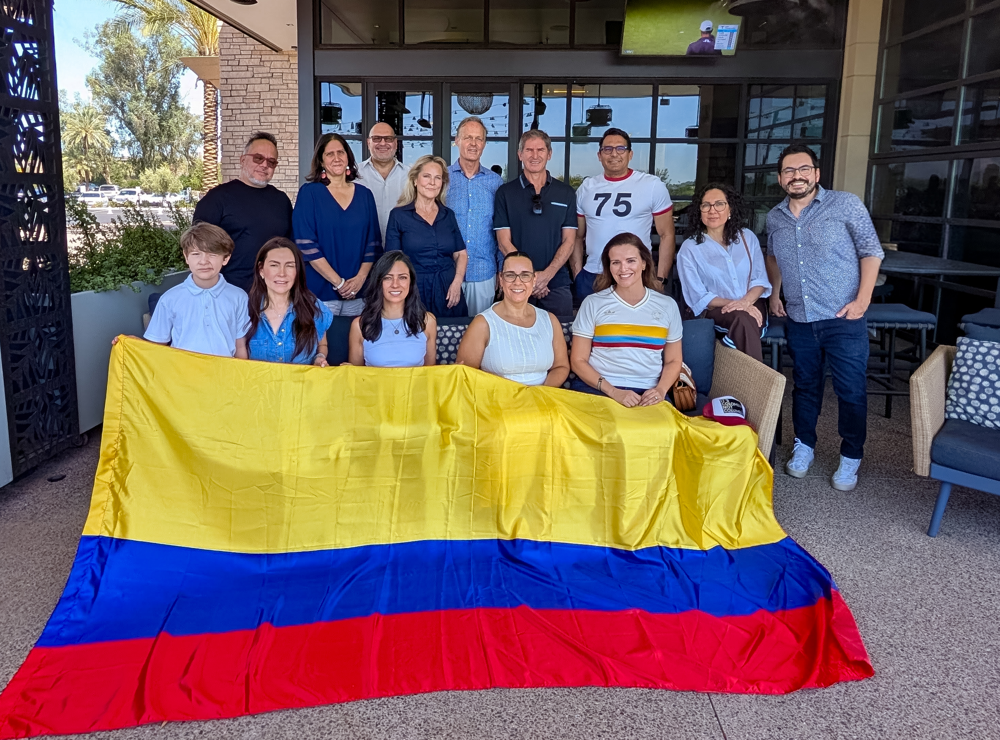

Conectar
Reunir a profesionales colombianos, organizaciones, negocios y amigos de Colombia en todo Arizona.
ContáctanosSomos una comunidad liderada por voluntarios que surgió a raíz de la emergencia del terremoto del 10 de agosto de 2026 en Colombia.
Nuestro propósito es simple: reunir a la gente en Arizona para ayudar a familias y comunidades en Colombia a recuperarse.

Colombians in Arizona reúne a colombianos, amigos de Colombia, familias, profesionales y vecinos que quieren acompañar a Colombia en un momento de necesidad urgente.
Muchos de nosotros tenemos familiares, amigos, lugares de origen y recuerdos personales conectados con las regiones afectadas. El grupo comenzó como una respuesta práctica a una pregunta dolorosa: cómo podemos ayudar desde Arizona de una manera confiable, rápida y útil?
Juntos, estamos usando nuestras conexiones en Arizona para acompañar a Colombia y ayudar a llevar apoyo donde pueda hacer una diferencia real.
La campaña actual promueve el apoyo directo a World Central Kitchen (WCK), que trabaja con aliados locales en Colombia para ofrecer comidas preparadas después del desastre.
El terremoto en Colombia nos reunió alrededor de una necesidad urgente, pero nuestra visión va más allá de una sola campaña.
Reunir a profesionales colombianos, organizaciones, negocios y amigos de Colombia en todo Arizona.
ContáctanosUsar nuestra experiencia colectiva, relaciones y recursos para responder cuando las comunidades necesitan ayuda.
Crear oportunidades para que los integrantes generen una diferencia tangible en Arizona y Colombia.
De Arizona a Colombia, cada comida y cada acto de apoyo cuenta. El mensaje de la campaña de WCK recuerda que una comida puede ofrecer consuelo, alimento y una preocupación menos durante un día increíblemente difícil.